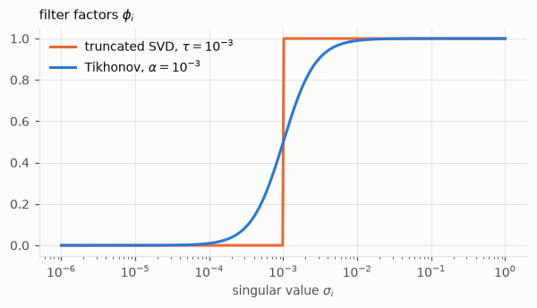
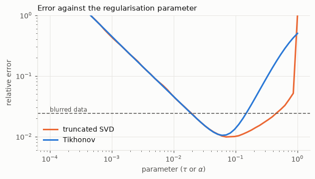
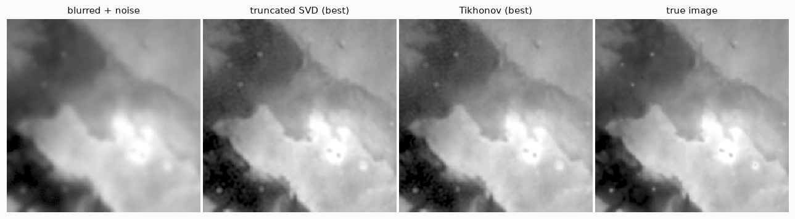
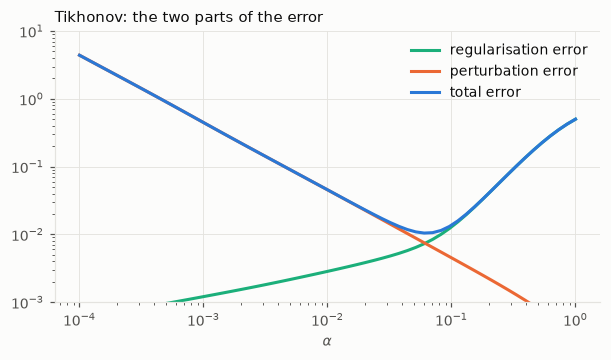
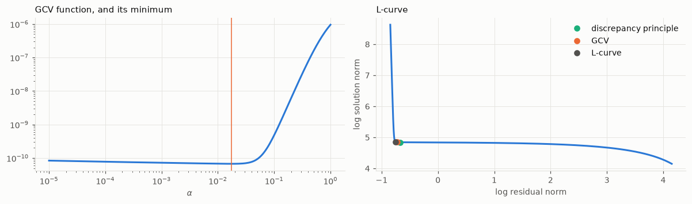
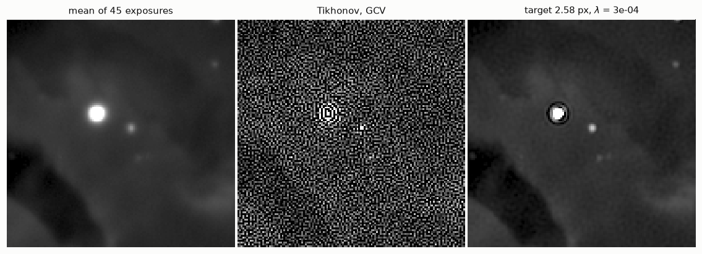

import numpy as np
from numpy.fft import fft2, ifft2
from scipy import optimize
import matplotlib.pyplot as plt
import hnotools as hno
hno.style()
rng = np.random.default_rng(0)
data = hno.load_sample()6 Regularisation by spectral filtering
Companion notebook to Hansen, Nagy & O’Leary, Deblurring Images, chapter 6, with the optimisation point of view of H. Talbot’s Lecture Notes on Optimisation, chapter 3.
Notebook 5 ended on a formula: a regularised solution is a filtered sum, \(x_{\text{filt}} = \sum_i \phi_i\, (u_i^{\mathsf T} b / \sigma_i)\, v_i\). This notebook is about choosing the filter factors \(\phi_i\), and above all about choosing how much to filter when the true image is unknown.
What you will take away
- Two classical filters: the truncated SVD and Tikhonov regularisation.
- Tikhonov regularisation is also the solution of a penalised least-squares problem. Filtering and penalising are two views of the same thing.
- The error of a regularised solution has two parts that pull in opposite directions.
- Three rules for choosing the regularisation parameter without the truth: the discrepancy principle, generalised cross-validation, and the L-curve.
- A fourth rule, the one our project uses: declare the resolution you will deliver, then verify it.
6.1 Two filters
- Truncated SVD: keep the \(k\) largest singular values, drop the others. \(\phi_i = 1\) if \(\sigma_i > \tau\), else \(0\).
- Tikhonov: damp smoothly, \(\;\phi_i = \dfrac{\sigma_i^2}{\sigma_i^2 + \alpha^2}\).
Both leave the large singular values alone (\(\phi \approx 1\)) and suppress the small ones (\(\phi \approx 0\)). The parameter, \(\tau\) or \(\alpha\), is the singular value at which the filter switches.
sig = np.logspace(-6, 0, 400)
alpha = 1e-3
fig, ax = plt.subplots(figsize=(6.4, 3.0))
ax.semilogx(sig, (sig > alpha).astype(float), color=hno.ORANGE, label='truncated SVD, $\\tau = 10^{-3}$')
ax.semilogx(sig, sig**2 / (sig**2 + alpha**2), color=hno.BLUE, label='Tikhonov, $\\alpha = 10^{-3}$')
ax.set_xlabel('singular value $\\sigma_i$'); ax.set_title('filter factors $\\phi_i$', loc='left'); ax.legend();
Note the Tikhonov factor for a small singular value: \(\phi_i / \sigma_i \approx \sigma_i / \alpha^2\), which goes to zero instead of infinity. The division by a tiny number has been replaced by a multiplication by a tiny number.
6.2 Tikhonov regularisation is a least-squares problem
The lecture notes introduce Tikhonov regularisation from a different door. Instead of solving \(A x = b\), look for the \(x\) that explains the data and stays small:
\[x_\alpha = \arg\min_x \;\|A x - b\|_2^2 \;+\; \alpha^2 \|x\|_2^2 .\]
The first term asks for fidelity to the data, the second penalises the wild oscillations that the naive solution is made of, and \(\alpha\) sets the exchange rate between the two. Setting the gradient to zero gives a linear system, the regularised normal equations,
\[(A^{\mathsf T} A + \alpha^2 I)\, x = A^{\mathsf T} b ,\]
whose matrix is symmetric positive definite, hence always invertible.
Is this the same solution as the Tikhonov filter? Check on the 1-D problem of notebook 5, where we have both the matrix and its SVD.
N = 250
s, signal = hno.lecture_signal(N)
A = hno.blur_matrix_1d(hno.gaussian_kernel_1d(4.0, 40), N)
b = A @ signal + 2e-4 * rng.standard_normal(N)
U, sv, Vt = np.linalg.svd(A)
alpha = 3e-3
x_filter = Vt.T @ (sv / (sv**2 + alpha**2) * (U.T @ b)) # filtered SVD sum
x_normal = np.linalg.solve(A.T @ A + alpha**2 * np.eye(N), A.T @ b) # normal equations
print('largest difference between the two solutions:', np.abs(x_filter - x_normal).max())
print(f'relative error of the Tikhonov solution: {hno.rel_error(x_filter, signal):.3f}')largest difference between the two solutions: 2.196867132653324e-10
relative error of the Tikhonov solution: 0.044Identical. Insert \(A = U \Sigma V^{\mathsf T}\) in the normal equations and the filter factors \(\sigma_i^2 / (\sigma_i^2 + \alpha^2)\) fall out in two lines (exercise 1).
The two views are worth keeping side by side.
- The filter view is the one that computes fast, whenever a fast transform diagonalises \(A\).
- The optimisation view is the one that generalises: change the penalty, add constraints, replace the square by a robust loss, and the minimisation problem still makes sense when no SVD can help. Notebooks 7 and 9 go down that road, and so does our project.
6.3 Deblurring an image with both filters
For images we use a fast transform. The Gaussian PSF is symmetric, so we take reflexive boundaries and the cosine transform (notebook 4); the eigenvalues \(S\) of the blur play the role of the singular values.
In this section and the next two, the test data are created with the same reflexive boundaries that the solver assumes. Notebook 4 called this the “inverse crime”, and it is one. We commit it on purpose: the rules of section 6.5 are derived for data that obey the model exactly, plus white noise, and we first want to see them work under their own assumptions. Section 6.5 ends with what happens when the assumptions fail.
from scipy import ndimage
psf = hno.gaussian_psf((25, 25), fwhm=6.0)
noise_level = 0.002
x_true = data['hubble'].astype(float)
b_img = ndimage.convolve(x_true, psf, mode='reflect') + noise_level * rng.standard_normal(x_true.shape)
S = hno.dct_eigenvalues(psf, b_img.shape)
B = hno.dct2(b_img)
def tsvd_image(B, S, tau):
X = np.zeros_like(B); keep = np.abs(S) > tau
X[keep] = B[keep] / S[keep]
return hno.idct2(X)
def tikhonov_image(B, S, alpha):
return hno.idct2(S * B / (S**2 + alpha**2))
params = np.logspace(-4, 0, 60)
err_tsvd = [hno.rel_error(tsvd_image(B, S, p), x_true) for p in params]
err_tikh = [hno.rel_error(tikhonov_image(B, S, p), x_true) for p in params]
tau_best, alpha_best = params[np.argmin(err_tsvd)], params[np.argmin(err_tikh)]
fig, ax = plt.subplots(figsize=(6.4, 3.2))
ax.loglog(params, err_tsvd, color=hno.ORANGE, label='truncated SVD'); ax.loglog(params, err_tikh, color=hno.BLUE, label='Tikhonov')
ax.axhline(hno.rel_error(b_img, x_true), color=hno.INK2, lw=1.0, ls=(0, (4, 2)))
ax.text(params[0], hno.rel_error(b_img, x_true) * 1.07, 'blurred data', fontsize=8, color=hno.INK2)
ax.set_ylim(0.006, 1); ax.set_xlabel('parameter ($\\tau$ or $\\alpha$)'); ax.set_ylabel('relative error'); ax.legend()
ax.set_title('Error against the regularisation parameter', loc='left');
print(f'blurred data error {hno.rel_error(b_img, x_true):.4f}')
print(f'truncated SVD, best tau {tau_best:.3f}: error {min(err_tsvd):.4f}')
print(f'Tikhonov, best alpha {alpha_best:.3f}: error {min(err_tikh):.4f}')blurred data error 0.0240
truncated SVD, best tau 0.070: error 0.0098
Tikhonov, best alpha 0.060: error 0.0105
hno.show([b_img, tsvd_image(B, S, tau_best), tikhonov_image(B, S, alpha_best), x_true],
['blurred + noise', 'truncated SVD (best)', 'Tikhonov (best)', 'true image'], same_scale=True, width=2.9);
Both filters do about equally well at their best setting, and both curves have the U shape. For too large a parameter Tikhonov loses sooner, because its filter starts damping well before \(\sigma_i = \alpha\). Its advantages lie elsewhere: no ripples from an abrupt cut, and a formulation as a minimisation problem, which is the one that generalises.
6.4 Two errors that pull in opposite directions
With \(b = A x + e\), the filtered solution differs from the truth by
\[x_{\text{filt}} - x \;=\; \underbrace{\sum_i (\phi_i - 1)\,(v_i^{\mathsf T} x)\, v_i}_{\text{regularisation error}} \;+\; \underbrace{\sum_i \phi_i\, \frac{u_i^{\mathsf T} e}{\sigma_i}\, v_i}_{\text{perturbation error}} .\]
- The regularisation error is the part of the true image that the filter removed. It grows with \(\alpha\).
- The perturbation error is the noise that the filter let through, amplified. It shrinks with \(\alpha\).
In an experiment we know \(x\) and \(e\), so we can compute each part:
X_true = hno.dct2(x_true)
E = B - S * X_true # the noise, in the transform domain
reg_err, pert_err = [], []
for a in params:
phi = S**2 / (S**2 + a**2)
reg_err.append(np.linalg.norm((phi - 1) * X_true) / np.linalg.norm(X_true))
pert_err.append(np.linalg.norm(phi * E / S) / np.linalg.norm(X_true))
fig, ax = plt.subplots(figsize=(6.4, 3.2))
ax.loglog(params, reg_err, color=hno.AQUA, label='regularisation error')
ax.loglog(params, pert_err, color=hno.ORANGE, label='perturbation error')
ax.loglog(params, err_tikh, color=hno.BLUE, label='total error')
ax.set_ylim(1e-3, 10); ax.set_xlabel('$\\alpha$'); ax.legend(); ax.set_title('Tikhonov: the two parts of the error', loc='left');
In Figure 6.4 the best \(\alpha\) is close to where the two curves cross. Every parameter-choice rule below is an attempt to locate that crossing without seeing either curve.
6.5 Choosing \(\alpha\) without knowing the truth
All three rules use only the data, through the residual \(r_\alpha = b - A x_\alpha\), whose coefficients in the transform domain are \((1 - \phi_i)\, \hat b_i\).
Discrepancy principle. If we knew the truth, the residual would be the noise, of squared norm about \(N \sigma^2\) for \(N\) pixels of noise \(\sigma\). So choose the \(\alpha\) whose residual has just that size: explain the data down to the noise, and no further. Needs the noise level.
Generalised cross-validation (GCV). A good \(x_\alpha\) should predict a data value that was left out. Averaged over all pixels this gives a function to minimise, \[G(\alpha) = \frac{\|r_\alpha\|^2}{\bigl(\sum_i (1 - \phi_i)\bigr)^2} .\] Needs nothing.
L-curve. Plot \(\log\|x_\alpha\|\) against \(\log\|r_\alpha\|\) for all \(\alpha\). The curve looks like an L; the corner is where reducing the residual further starts to cost a large increase in the solution. Needs nothing.
grid = np.logspace(-5, 0, 200)
def residual_norm(B, S, a):
return np.linalg.norm(a**2 / (S**2 + a**2) * B) # (1 - phi) * B
def solution_norm(B, S, a):
return np.linalg.norm(S * B / (S**2 + a**2))
def gcv(B, S, a):
one_minus_phi = a**2 / (S**2 + a**2)
return np.sum((one_minus_phi * B)**2) / np.sum(one_minus_phi)**2
def choose_alpha(B, S, sigma):
"""The three rules. Returns a dict {rule: alpha}."""
dp = 10 ** optimize.brentq(lambda la: residual_norm(B, S, 10**la) - np.sqrt(B.size) * sigma, -6, 1)
g = grid[np.argmin([gcv(B, S, a) for a in grid])]
rho = np.log([residual_norm(B, S, a) for a in grid]); eta = np.log([solution_norm(B, S, a) for a in grid])
d1r, d1e = np.gradient(rho), np.gradient(eta)
curvature = (d1r * np.gradient(d1e) - np.gradient(d1r) * d1e) / (d1r**2 + d1e**2) ** 1.5
return {'discrepancy principle': dp, 'GCV': g, 'L-curve': grid[5 + np.argmax(curvature[5:-5])]}
def report(B, S, sigma, x_ref, b_ref):
errs = [hno.rel_error(tikhonov_image(B, S, a), x_ref) for a in grid]
rules = {'best possible (uses the truth)': grid[np.argmin(errs)], **choose_alpha(B, S, sigma)}
print(f'{"rule":32s} {"alpha":>8s} relative error (blurred data: {hno.rel_error(b_ref, x_ref):.4f})')
for name, a in rules.items():
print(f'{name:32s} {a:8.4f} {hno.rel_error(tikhonov_image(B, S, a), x_ref):.4f}')
return rules
rules = report(B, S, noise_level, x_true, b_img)
fig, ax = plt.subplots(1, 2, figsize=(11, 3.3))
ax[0].loglog(grid, [gcv(B, S, a) for a in grid], color=hno.BLUE); ax[0].axvline(rules['GCV'], color=hno.ORANGE, lw=1)
ax[0].set_xlabel('$\\alpha$'); ax[0].set_title('GCV function, and its minimum', loc='left')
ax[1].plot(np.log([residual_norm(B, S, a) for a in grid]), np.log([solution_norm(B, S, a) for a in grid]), color=hno.BLUE)
for (name, a), col in zip(list(rules.items())[1:], (hno.AQUA, hno.ORANGE, hno.INK2)):
ax[1].plot(np.log(residual_norm(B, S, a)), np.log(solution_norm(B, S, a)), 'o', color=col, label=name)
ax[1].set_xlabel('log residual norm'); ax[1].set_ylabel('log solution norm'); ax[1].set_title('L-curve', loc='left'); ax[1].legend()
fig.tight_layout()rule alpha relative error (blurred data: 0.0240)
best possible (uses the truth) 0.0622 0.0104
discrepancy principle 0.0353 0.0138
GCV 0.0174 0.0264
L-curve 0.0043 0.1035
Compare each rule with the first line, the only one that used the true image.
- The discrepancy principle lands close to the best possible choice. It was told the noise level, and here the noise is exactly what it assumes.
- GCV, which was told nothing, regularises too little, and its result is no better than the blurred data.
- The L-curve corner is badly placed on this problem: it regularises far too little and the result is worse than the data. The L-curve is known to struggle when the true image is very smooth, which is our case.
None of the rules is infallible, and on another problem their ranking can change. This is the honest state of the art; the book discusses the strengths and failure modes of each.
Estimating the noise level. The discrepancy principle needs \(\sigma\). It can be read off the data: at the highest frequencies the blurred signal has vanished (notebook 5), so those coefficients are pure noise.
m = B.shape[0]
high = B[m // 2:, m // 2:] # the high-frequency quarter
sigma_hat = 1.4826 * np.median(np.abs(high))
print(f'noise estimated from the data: {sigma_hat:.5f} true value: {noise_level}')noise estimated from the data: 0.00201 true value: 0.002When the assumptions fail
Now the honest version of the same experiment (notebook 4): the scene is larger than the picture, so light really came from outside, and the reflexive boundary is only an approximation. Same PSF, same noise, same rules.
x_h, b_h = hno.make_test_problem(x_true, psf, noise=noise_level)
S_h, B_h = hno.dct_eigenvalues(psf, b_h.shape), hno.dct2(b_h)
report(B_h, S_h, noise_level, x_h, b_h);rule alpha relative error (blurred data: 0.0238)
best possible (uses the truth) 0.0740 0.0164
discrepancy principle 0.0237 0.0291
GCV 0.0104 0.0550
L-curve 0.0034 0.1392All three rules now regularise too little, and the “restored” images are worse than the blurred one. Nothing is wrong with the code. The residual \(b - A x_\alpha\) now contains two things: the noise, and the error of the model at the edges, which is not white noise at all. The rules cannot tell them apart. They see structure in the residual, conclude that the solution does not yet explain the data, and push \(\alpha\) down to chase an error that no \(x\) can explain.
This is the most practical lesson of the notebook: parameter-choice rules are only as good as the model of the data. With real images the model is never exact: the PSF is measured with some error, it varies across the field, bright stars saturate. The next section shows a rule that asks less of the model.
6.6 Real data, and a fourth rule
Let us deblur a real image: the average of our 45 exposures. First measure its PSF on a star (notebook 3), then apply Tikhonov regularisation with the parameter chosen by GCV. The PSF is not symmetric in general, so we use the FFT with tapered edges (notebook 4). With complex eigenvalues \(K\), the Tikhonov solution reads \(X = \bar K\, Y / (|K|^2 + \alpha^2)\).
y = data['mean'].astype(float)
star = hno.fit_star(y, 161, 169) # an unsaturated star
print(f'PSF of the mean image: FWHM {star["fwhm"]:.2f} px = {star["fwhm"] * float(data["pixel_scale"]):.2f} arcsec, Moffat beta {star["beta"]:.2f}')
K = hno.psf2otf(hno.moffat_psf(y.shape, star['fwhm'], beta=star['beta']))
Y = fft2(hno.taper(y))
def gcv_fft(a):
one_minus_phi = a**2 / (np.abs(K)**2 + a**2)
return np.sum(np.abs(one_minus_phi * Y)**2) / np.sum(one_minus_phi)**2
alpha_real = grid[np.argmin([gcv_fft(a) for a in grid])]
x_gcv = ifft2(np.conj(K) * Y / (np.abs(K)**2 + alpha_real**2)).real
print(f'GCV chooses alpha = {alpha_real:.4f}; star FWHM after deblurring: {hno.fit_star(x_gcv, 161, 169)["fwhm"]:.2f} px')PSF of the mean image: FWHM 3.23 px = 2.46 arcsec, Moffat beta 2.72
GCV chooses alpha = 0.0018; star FWHM after deblurring: 0.72 pxA star narrower than one pixel is not a restoration. GCV has chosen a tiny \(\alpha\), and the result is close to the naive inverse: this is the failure of the previous section, on real data, where the model is never exact (the PSF is itself a noisy measurement, and the bright stars are saturated).
There is a deeper problem. Even when a rule behaves, how sharp is the result supposed to be? Tikhonov regularisation does not say: the resolution of the output is whatever comes out, and it differs from image to image.
Our project turns the question around, following Magain et al. (1998). Decide first what PSF the result should have: a narrower one than the data, the target \(t\), but not infinitely narrow. Then aim at the sky seen through that target, \(t * x\), instead of the sky itself:
\[X_t = T\,\frac{\bar K\, Y}{|K|^2 + \lambda} .\]
It is the Tikhonov filter (with \(\lambda = \alpha^2\)) multiplied by the transfer function \(T\) of the target, which removes on purpose the highest frequencies, those we could never have restored. And the choice of \(\lambda\) becomes a contract: take the largest \(\lambda\), hence the least noise, for which a star of the result really has the declared width.
target_fwhm = 0.8 * star['fwhm'] # declare: 20 % sharper than the data
T = hno.psf2otf(hno.gaussian_psf(y.shape, target_fwhm))
print(f'declared target: {target_fwhm:.2f} px')
chosen = None
for lam in (1e-1, 3e-2, 1e-2, 3e-3, 1e-3, 3e-4, 1e-4):
x_t = ifft2(T * np.conj(K) * Y / (np.abs(K)**2 + lam)).real
delivered = hno.fit_star(x_t, 161, 169)['fwhm']
ok = delivered <= 1.05 * target_fwhm
print(f' lambda {lam:7.0e}: delivered {delivered:.2f} px {"<- contract met" if ok and chosen is None else ""}')
if ok and chosen is None:
chosen = (lam, x_t)
crop = (slice(100, 228), slice(100, 228))
hno.show([y[crop], x_gcv[crop], chosen[1][crop]],
['mean of 45 exposures', f'Tikhonov, GCV', f'target {target_fwhm:.2f} px, $\\lambda$ = {chosen[0]:.0e}'], same_scale=True, width=3.4);declared target: 2.58 px
lambda 1e-01: delivered 4.24 px
lambda 3e-02: delivered 3.65 px
lambda 1e-02: delivered 3.27 px
lambda 3e-03: delivered 2.98 px
lambda 1e-03: delivered 2.82 px
lambda 3e-04: delivered 2.70 px <- contract met
lambda 1e-04: delivered 2.63 px 
Look at the three images.
- The GCV result is noise, as the sub-pixel star had warned.
- The target version is a credible, slightly sharper image, and it states what it delivers: we checked it on a star. That check is the whole difference between a restoration and a measurement.
- It also shows a dark ring around the saturated star: the model violation of notebook 1, still with us. The project removes the stars before deblurring the nebula for exactly this reason.
One limitation remains. The average of 45 exposures has one PSF, a blend of 45 different ones. The sharp exposures have been diluted by the blurred ones before we even started. Notebook 8 removes that limitation.
Your turn
- Derive the filter. Insert \(A = U \Sigma V^{\mathsf T}\) into \((A^{\mathsf T} A + \alpha^2 I)\,x = A^{\mathsf T} b\) and show that \(x = \sum_i \frac{\sigma_i^2}{\sigma_i^2 + \alpha^2} \frac{u_i^{\mathsf T} b}{\sigma_i} v_i\).
- Gradient. Write \(F(x) = \|Ax - b\|^2 + \alpha^2\|x\|^2\) and compute its gradient. Check numerically, on the 1-D problem, that the gradient vanishes at
x_normaland not at the true signal. What does that tell you about what Tikhonov regularisation “believes”? - More noise. Redo sections 6.3 to 6.5 with
noise_level = 0.02. How do the best \(\alpha\) and the three rules move? Which rule tracked the change best? - Wrong noise level. Give the discrepancy principle a noise level that is 30 % too small, then 30 % too large. Which mistake is worse? Why do practitioners multiply \(\sigma\) by a safety factor slightly above 1?
- Coloured noise. GCV assumes white noise. Smooth the noise with a small Gaussian before adding it to the blurred image, and look at the GCV function. What goes wrong?
- Ask for too much. In section 6.6, declare a target of half the width of the data. Can the contract be met? At what cost in the background of the image? What is the honest conclusion?